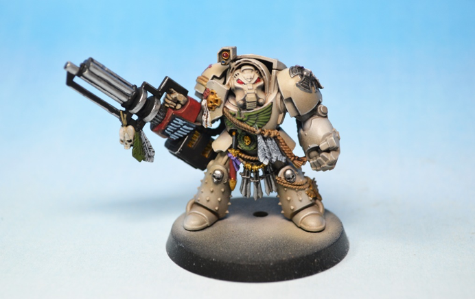
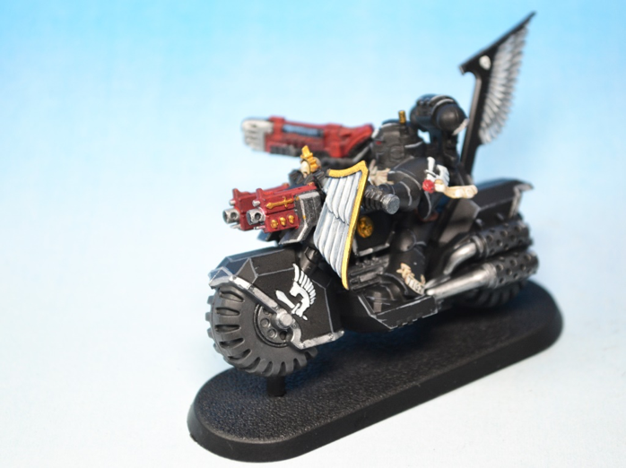
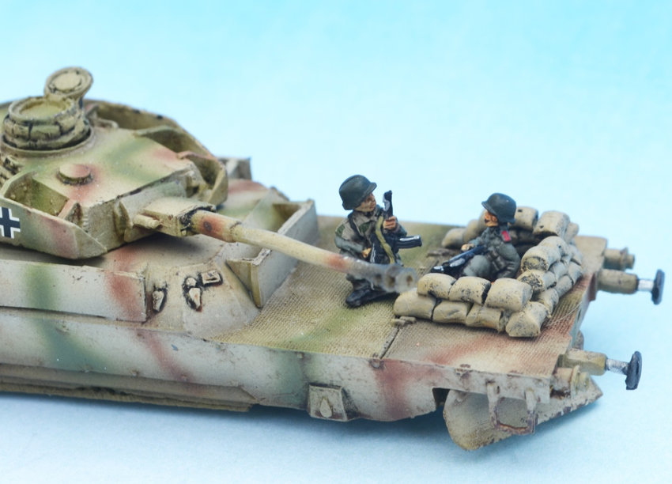
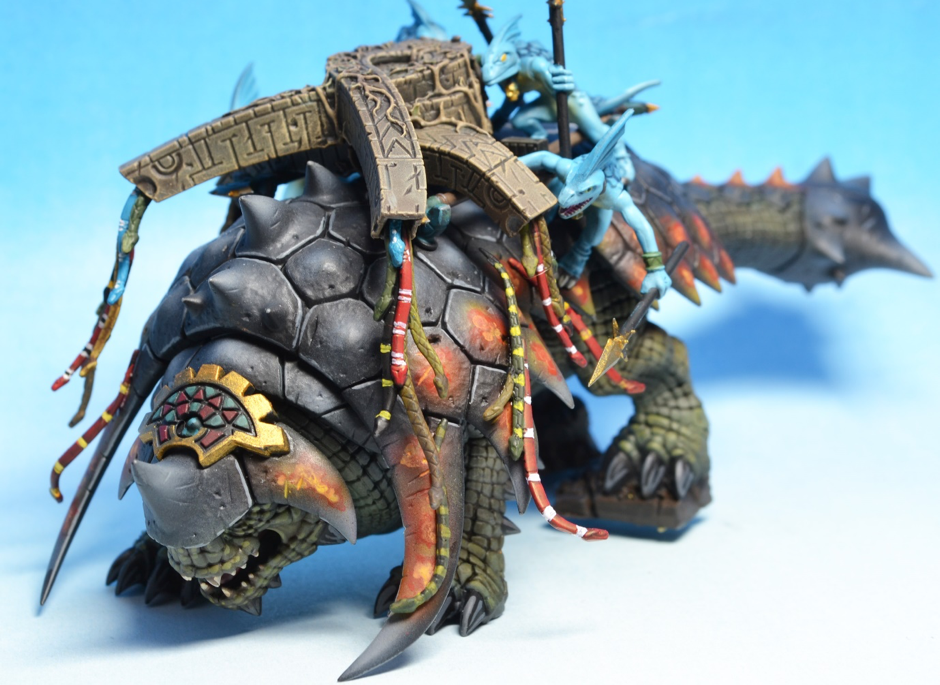

Dark Angels
Jan 31, 2018 by John
I’ve never really painted any 40k figures before apart from 5 Sisters of Silence which came to me with something else, so decided to give them a go and started at the shallow end with some figures I reckoned were not so baroque that I would be unable to transfer my 15mm armour techniques on to. Dark Angels fit the bill with their largely monocolour liveries of green, bone and black for Marines, Deathwing and Ravenguard respectively.
The figures are from the Dark Vengeance box which were easy to put together which is a bonus as I don’t like this part of the process and get annoyed beyond reason when working on small plastic parts which ping off the desk onto the floor and scurry into the hardest places to find..
Anyway first up a Pair of Dark Angel Marines. At this point for full disclosure I think I need to point out that I don’t play 40k so I may make mistakes with terminology.


These were initially airbrushed with GW Caliban green from their airbrush range in the annoying little flip top lid flasks which mean you have to use a pipette to remove or lose some paint every time you pour into the airbrush. Having moaned the actual paint seems to cover and flow well enough. This was then followed with subtle modulation using Vallejo modelair greens (Cam Olive Green and Cam green). In retrospect I think I needed a little more highlight but was working with the dark part of Dark Angel at the front of my mind.
The fellow below with the big red gun shows a bit more of the effect and actually its more pronounced in real life than in the photos.
Next up were the Deathwing who with their bigger surfaces were my favourites for modulation and much more like the German Dunkelgelb I’m more familiar with.

These were undercoated black for heft then Burnt Umber, Khaki Brown,Light Brown, Sand and final highlights with a Sand/White mix – again all Vallejo Modelair. A very weak Agrax glaze smoothed out the whole and edges were highlighted with an even lighter Sand/White. Im pleased with these guys though the faces look like grumpy baboons.
Finally the Ravenwing (who are nothing to do with Ravenclaw apparently) and their cool black 1950s James Dean black leather look. Apart from this guy who is making the basic flowing robe and spinning machinery mistake pointed up in “The Incredibles”.
Seriously unless it’s a special magic robe it’s going to get caught in the rear wheel and pull him off. Maybe that’s why hes’ bald – too many robe caused falls
However, rule of cool it looks good I decided not to modulate the black and just do the panel edges as neatly as possible and concentrate on the more eye-catching parts such as the wingy bits.

So that’s my first sortie into 40k and im pretty happy overall. Lessons learned are to do a tiny bit more highlight even though they are dark and mean and secretive (so I believe). I have a few other bits I’m painting up ( Primaris squads and Assault squads) then hi ho hi ho to Ebay it will go.
Introduction
Jan 29, 2017 by John
Hello There
Thanks to my foresight many years ago in producing a daughter capable of building websites I now have the capacity to inflict photographs of painted miniatures onto a cold uncaring world.
Allied to this thanks to my erstwhile employer, I now also have the time on my hands (and a decent redundancy payment) to do so for some little while. Like the bloke from The A team said “I love it when a plan comes together”. Except there was never an actual plan as such.
Anyway, point is through this website I am able to display my wares to whosoever wants to see them and perhaps buy them. Everything on the site has been painted by myself and has sold or is being sold.
I used to be an active wargamer - meaning I went running and played football as well as wargaming - but now I’m an inactive non wargamer as now I do none of the above due to my knees being worn out/knackered by too many miles/ injuries and developing a preference for board games such as Advanced Squad leader and C&C Napoleonics.
This move to boardgaming came about as a damascene revelation that what I really liked about figure gaming was actually just the figures. The lengthy setting up, the grail quest for decent rules, the infinite measuring of arcs and ranges then packing up after a couple of turns wasn’t why I played. It was the painting of figures! As a result I flogged all my miniatures to fund the hobby of painting and turned to boardgaming to get the gaming fix.

Chilling out

Unleashed
Now unbound I no longer needed to paint what was needed for the latest rules set but could paint whatever I fancied and sell the finished product on Ebay. So here I am complete with new-fangled website. I’m not sure about the whole blog thing as I’m not convinced that anyone will be interested in my witterings however the success of Facebook seems to suggest that lots of people are interested in other peoples’ irrelevant doings so I’ll give it a go and will accept failure as proof that gamers have higher standards!